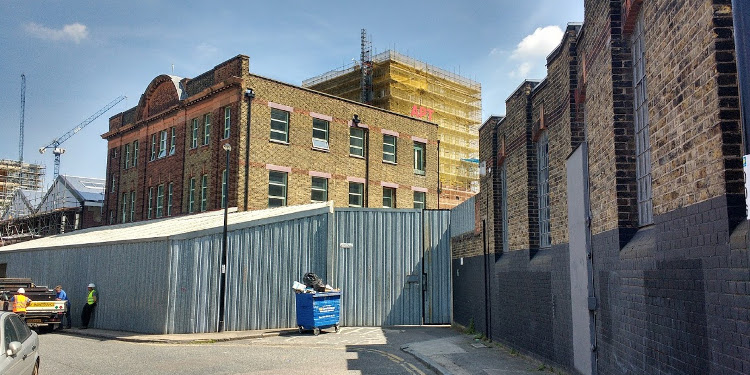

Introduction

In this activity, Erica takes Maria to a children’s morning at the library. They both make friends, even if Maria causes trouble! Erica gets a very kind offer from her new friend.
You will practise using articles and prepositions and also think about the differences between formal and informal language.
Get started
Have you heard a lot of words about looking after children that you don’t understand? Try to match the word to the explanation to help you learn some useful terms.
- nursery
- crèche
- playgroup / playschool
- day care
- childminder
- babysitter
- a place where young children are cared for during the day while their parents do something else, especially work, study, or shop
- care or education provided during the day, especially for young children
- a place where young children and babies are taken care of while their parents are at work
- a person whose job is to take care of other people's children in her or his own home
- an organised group for children aged between three and five to play and learn together in a place outside their homes
- someone who looks after children at home while parents go out in the evening
Answers